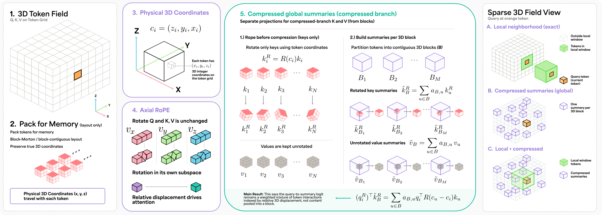

NeurIPS 2026 · Sydney, Australia
Geometry Matters in Packed 3D Attention
Packing a 3D field into a token sequence gives every token two indices: a coordinate in the sample and a position in memory. PACK3D attends by the coordinate. A model that attends by memory position can learn the storage order instead of the object, and accuracy on the training layout cannot tell you which one it learned.
Chapter 1
Every token has two indices
Attention over a volume starts by writing the volume down. Patches become tokens, and the tokens go into memory in some order: raster, Morton, block by block.
The order is a systems choice, made for speed. It changes where a token is stored and leaves the token where it is. Each token keeps its coordinate . In the paper's words, the memory position i says where a token is stored, and ci says where it is.
Below is a small field of 512 tokens. Pick a query q (orange) and look at its neighbor k one step up (green). The offset between them in the volume, , never changes. The offset between them in memory, , depends on the order you choose.
The sample: eight z-slices, z = 0 to 7, each seen from above
The memory: 512 positions, read left to right, top to bottom
Colors follow each token's place in the sample, so a token keeps its color in every view. The pure repack keeps the raster order inside each z-layer and moves whole layers, the way the paper's repack moves whole summary groups.
Chapter 2
The failure is silent
A positional encoding indexed by sequence position learns what a memory offset means.
Under raster order, the token 64 positions ahead of q is the one directly above it, and the tokens 1 and 8 positions away are its neighbors along x and y. That is a consistent proxy for geometry. So on the layout a model was trained on, a sequence index can stand in for a coordinate, and the model works.
Switch the lab above to Sequence neighbors: it marks the six tokens at Δseq = ±1, ±8 and ±64 from q. Under raster, for a query away from the edges of the field, they are exactly its six face neighbors. Under any other order, the same offsets point somewhere else in the volume.
On the training layout, accuracy cannot reveal which index a model reads. On Allen-15 microscopy, a sequence-indexed model and PACK3D trained on the same raster-block layout reach comparable Dice:
The packed-minus-axial difference on the training layout is −0.0018 over six seeds (exact p = 0.22). Nothing here says which index each model reads.
Chapter 3
PACK3D attends in the coordinates of the sample
PACK3D is a local–global attention operator that separates memory layout from attention geometry. It rests on three contracts.
Local attention is exact
Each query attends to every token in its 3 × 3 × 3 coordinate neighborhood, at most 27 tokens. The neighborhood is defined by coordinate offsets and validity, never by adjacency in the packed array. Microscopy carries high-frequency morphology that summaries would erase.
The rest of the field comes through summaries
Blocks of tokens are pooled into summaries, and every query attends to all of them. On Allen-15 that is 1,024 summaries per KV head at 262,144 tokens.
Compatibility is a function of 3D coordinates
Queries and keys are rotated with axial RoPE at their token-grid coordinates, never at their packed sequence index. Values are not rotated.
Keys are rotated before they are pooled
So each query-to-summary logit is a weighted sum of query–key terms, each evaluated at a member token's displacement from the query.
A logit that only sees displacement
Axial RoPE splits each head into rotation planes, one set per axis: . A query and a key are each turned by their own coordinate, and the turns cancel down to their difference:
So the logit depends on the displacement and never on where either token is stored. Drag the two tokens. Then move both together, or repack the memory.
Rotate first, then pool
The global branch pools each block of tokens into one summary key. PACK3D rotates every key by its own coordinate before pooling:
That keeps the geometry of the members inside the summary. Proposition 1 of the paper makes it exact: each query-to-summary logit is a weighted sum of query–key terms, each at a member token's displacement from the query.
The identity does not make compression lossless: members are no longer individually addressable, and softmax over summaries is not softmax over tokens.
A cheaper summary-center variant pools unrotated keys and rotates the result once, at a representative coordinate. It is still coordinate-aware, and the paper bounds its logit error. But with uniform pooling, as in this toy, it cannot tell where inside the block each token sits. Swap two token states inside a block and watch both summaries.
Interlude
The whole operator on one page
Figure 1 of the paper draws the operator end to end. Step through it panel by panel, or clicktap any part of the figure to zoom in.

Figure 1 is a schematic that draws one summary per block. The reported models add a second pooling stage and use the layouts described in the paper's method section.
Chapter 4
What a repack must carry
Coordinates alone are not enough. For the operator to be unchanged up to the permutation itself, more has to travel with each token.
Proposition 2, packing equivariance: if a repacking P carries with each token its coordinate and validity, its neighborhood edges, its summary memberships and its canonical slot within its block, and all tokenwise maps are shared, then in exact arithmetic
where 𝒢 collects the coordinates and grouping metadata. Sequence-index RoPE has no such guarantee: a repack changes the rotary coordinate of every token it moves. Tick what travels.
Chapter 5 · The result
Repack the memory, keep the volume
Hold each trained checkpoint fixed. Change only the memory order. Compare predictions in a common spatial order.
The repack moves whole summary groups. It moves 99.6% of tokens in memory and preserves every membership, so it lies inside Proposition 2. One fixed permutation is applied to every seed, so this is a stress test of storage-order dependence, not an estimate over layouts.
Packed RoPE loses Dice in all six seeds. The packed-minus-axial change is −0.0480, negative in all six seed pairs (exact p = 0.031; paired t-test p = 2 × 10−4).
Show the numbers
How many predictions moved
Aligned hard predictions change at 0.0069% of positions for PACK3D, consistent with floating-point reduction order, and at 1.23% for packed RoPE. Each square below holds the 262,144 token positions of one crop.
PACK3D: 0.0069% of positions, about 18 per crop, each circled so it can be seen
Packed RoPE: 1.23% of positions, about 3,215 per crop
Counts are to scale: the mean rate over six seeds times 262,144 positions, one pixel each. Where the changed positions fall inside a crop is not shown here; the lit pixels are placed at random.
Two models with comparable accuracy on their training layout respond differently when only the storage order changes.
The sequence-indexed model has bound part of what it learned to the layout; the coordinate-indexed model has not.
A harder switch: change the groups too
A named-layout switch evaluates the raster-trained checkpoints under native block-Morton order. It keeps coordinates and neighborhoods but changes which tokens are summarized together, so it changes the operator and lies outside Proposition 2.
Three seeds. PACK3D 0.8228 → 0.8223; packed RoPE 0.8233 → 0.7445. The difference holds in all three seed pairs (paired t-test p = 0.0035; exact p = 0.25).
Chapter 6
A second domain
On the Medical Segmentation Decathlon, a pure repack of the same kind again separates the encodings, with little cost in Dice.
All three encodings reach comparable fixed-layout Dice on Heart (MRI) and Spleen (CT). Under the pure repack, packed RoPE changes more aligned predictions than both coordinate-indexed encodings in every seed on both tasks, yet mean Dice moves by less than 0.0003 for every arm. Separable PE is a learned 3D embedding read at coordinates.
The MSD models are depth 1, trained under native block-Morton order on crops centered on known foreground, and validated on 8 Heart crops from 4 held-out cases and 16 Spleen crops from 8. Here the named switch runs the other way, from native to raster. It costs packed RoPE 0.0021 Spleen Dice, a loss in all three seeds (exact p = 0.25), yet packed RoPE keeps the highest post-switch Spleen Dice (0.9589); on Heart it causes no consistent loss. Whether storage-order sensitivity becomes accuracy loss depends on the task.
Chapter 7
Inside the global branch
An independently trained local-only model matches the fixed-layout Allen-15 score, so natural-data Dice does not show that the task needs the global branch. A jointly trained model can still depend on it.
Zeroing the compressed output and swapping in another sample's summaries lose Dice in all three seeds. Permuting summary keys and values together changes Dice by only +0.0001, as it must: attention over a set does not depend on the set's order.
Long range: the label lies outside the query's radius-one neighborhood. Zeroing the remote evidence returns the full model to chance, and flipping it inverts every prediction.
Rotated summaries therefore carry a usable token-coordinate channel, and the global branch delivers remote evidence when a task requires it. Neither probe shows that natural segmentation does.
Chapter 8
Against a matched 3D U-Net
Same data, output grid, loss and optimizer. 30.08M parameters for PACK3D, 31.87M for the TokenGrid 3D U-Net, six seeds.
PACK3D's best-checkpoint Dice is higher by 0.0094 in all six pairs (exact p = 0.031; paired-t 95% interval [0.0065, 0.0123]). At the final checkpoint the difference is 0.0096, with five of six wins. This is a modest, consistent advantage in one matched comparison, not a ranking of attention above convolution.
At the best checkpoint the U-Net is ahead on CETN2 and NUP153, and only ATP2A2 and SEC61B (marked *) survive a paired-t Holm correction. At the final checkpoint, 12 of 15 structures favor PACK3D. HoverTap a dot for its structure.
Chapter 9
What it costs
One full attention layer, forward and backward, on one H200 in bf16, at the trained Allen-15 configuration.
Window attention is faster than PACK3D at every token count, by 7–9% from 131k to 524k tokens and by 16% and 31% at 65k and 1M. That premium buys a global pathway window attention lacks, and PACK3D uses less peak memory than window attention throughout. Against dense SDPA, PACK3D is 6.43× faster at 65k tokens and 99.56× faster at 1M.
Median of ten timed repetitions after three warmups; peak PyTorch allocation. Layer measurements, not end-to-end training speedups. Because the number of summaries grows with the token count at a fixed pooling factor, the global term stays quadratic.
Chapter 10
Where the claim stops
What the evidence does not support
- A fixed-layout accuracy advantage for axial RoPE.
- That rotating keys before pooling, or the global branch, is needed for natural-data Dice.
- Superiority over volumetric segmenters at large.
- Label-free prediction: the Allen task predicts Allen-generated masks from target fluorescence, brightfield and DNA.
Limitations
- The medical models are shallow, with small validation populations and crops centered on known foreground. They show layout sensitivity with little accuracy consequence, and the experiments do not explain the difference from Allen.
- Best checkpoints and reported scores share one validation set.
- The U-Net margin is modest; Swin UNETR and nnFormer were not run; the rotary allocation for anisotropic grids was not ablated.
- The global work stays quadratic at a fixed compression ratio, and window attention is faster per layer.
- These are research models, not validated for clinical or scientific decisions; automated masks and label-guided crops can propagate bias into downstream measurements.
Three corrections to the version of this paper reviewed for NeurIPS shape this reading. Its packed-sequence controls had no active rotary pairs, its summary-shuffle ablation relied on an evaluator bug, and its threshold baseline was tuned on validation crops. The corrected experiments reported in the paper replace all three.
Take it home
Run the test on your own pipeline
A membership-preserving repack is a cheap test that any pipeline whose tokens carry physical coordinates can run before trusting its positional encoding.
Permute whole summary groups in memory, run the trained model unchanged, restore spatial order, and compare predictions. Every token's coordinate, validity, neighborhood edges, memberships and within-block slot must travel with it; otherwise the test can flag even a coordinate-indexed model. The sketch below is pseudocode; adapt the names to your own model.
# a membership-preserving repack test (pseudocode) perm = permute_groups(num_groups, seed) # whole summary groups move order = expand(perm, group_size) # token order in memory x_mem = tokens[order] # same tokens, new order c_mem = coords[order] # coordinates travel along g_mem = transport(meta, order) # validity, edges, groups, slots y_new = model(x_mem, c_mem, g_mem) # trained model, unchanged y_new = y_new[inverse(order)] # back to spatial order y_ref = model(tokens, coords, meta) changed = mean(argmax(y_new) != argmax(y_ref)) # near zero: this repack left the predictions unchanged # large: predictions depend on the storage order
The code release runs the test on a small synthetic field, on a CPU: examples/repack_test.py. It repacks the input of one attention layer and compares the outputs, once with RoPE at token coordinates, as in PACK3D, and once with RoPE at sequence index. The first output does not change; the second does.
Memory layout is a systems decision, not an attention coordinate system.
The paper
Abstract
Packing a 3D field into a token sequence gives every token two indices: a coordinate in the sample and a position in memory. Raster, Morton, and block-contiguous layouts change the position and leave the coordinate alone. A positional mechanism indexed by sequence position can therefore learn the memory layout rather than the object, and accuracy on the training layout cannot reveal that it has. We introduce PACK3D, a local–global attention operator that separates memory layout from attention geometry. It attends exactly within a coordinate-defined neighborhood, sees the whole field through pooled summaries, and rotates queries and keys with axial RoPE at token-grid coordinates. Because keys are rotated before pooling, each query-to-summary logit is a weighted sum of query–key terms evaluated at the summarized tokens' displacements from the query. The operator is equivariant to any repacking that carries coordinates, neighborhoods, summary memberships, and within-block slots along with the tokens. On Allen WTC-11 microscopy at 262k tokens, PACK3D and a matched packed-sequence RoPE control reach comparable Dice on the training layout. Repacking the same validation volumes then costs the packed control 0.048 macro Dice on average, with a loss in all six seeds, while PACK3D changes by 0.0001. On MSD Heart and Spleen, sequence indexing again changes more predictions under repacking, at little cost in Dice. PACK3D also exceeds a parameter-matched 3D U-Net by 0.009 Dice over six seeds, and a full PACK3D layer runs within 7–31% of window-attention latency while adding a global pathway. Geometry, not storage order, should index attention over packed 3D fields.
Amil Khan, Anantajit Subrahmanya and B.S. Manjunath. Geometry Matters in Packed 3D Attention. Advances in Neural Information Processing Systems (NeurIPS), 2026. arXiv:2610.38694
Cite
Geometry Matters in Packed 3D Attention
@inproceedings{khan2026geometry,
title = {Geometry Matters in Packed 3D Attention},
author = {Khan, Amil and Subrahmanya, Anantajit and Manjunath, B. S.},
booktitle = {Advances in Neural Information Processing Systems},
year = {2026},
eprint = {2610.38694},
archivePrefix = {arXiv}
}